8 April 2023
When creating elements on a webpage, they should have position properties to get them to where they need to be on the page. Four such variations of position properties are static (the default), absolute, fixed, and relative.
Here I've made four boxes. By default, they stack vertically as per the normal flow of the document.
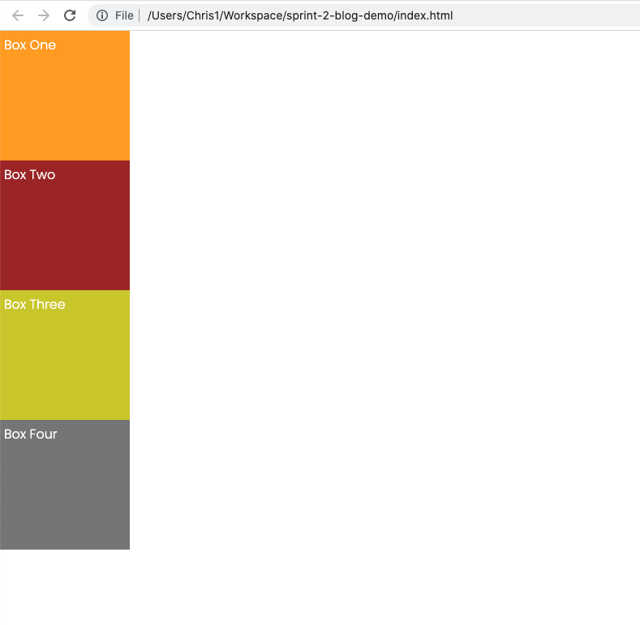Normal flow is essentially the default layout of the elements you put in an HTML document. You can think of this like a pan of brownies, where each piece sits next to the others in a single layer.
Each of the boxes has a default position property of static.
Static positioning means that your elements will follow the normal flow, and adding position properties in the CSS stylesheet like top, right, bottom, and left will have no effect. The yellow squiggle denotes that it will not work- and the box does not move on screen when I refresh the browser window.
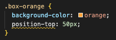Giving your CSS styles a position property of absolute, fixed, or relative will change these characteristics.
The most important characteristics to note about absolute position are;
They will be removed from the normal flow of the document. Imagine again a pan of brownies, but now there are two layers instead- pieces on the bottom layer can occupy the space below pieces on the second layer.
Here, the yellow box has been given a position property of absolute.
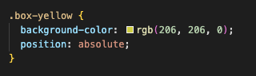The result is that the grey box jumps up to occupy the space underneath the yellow one- imagine the yellow box is stacked on top. The grey box is still in the normal flow, but the yellow one is not.
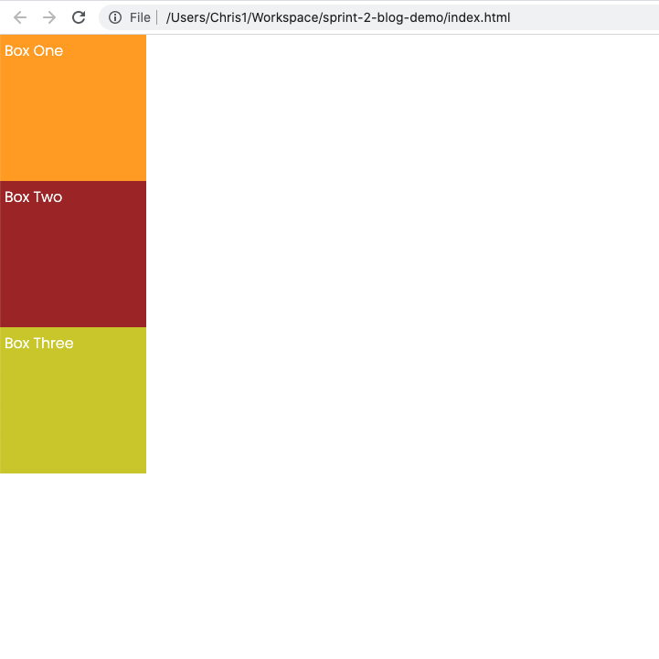The next thing to know about absolute position is that you can, and should apply additional position properties such as top, right, and so on. Here, the orange box has been given absolute position, and a left position of 100px.

As a result, it is removed from the normal flow (subsequent boxes jump upwards to fill the gap), and it is shifted 100px from the left of the viewport. Imagine that the orange brownie is sitting on top of the red one, and it's shifted over from the edge of the pan.
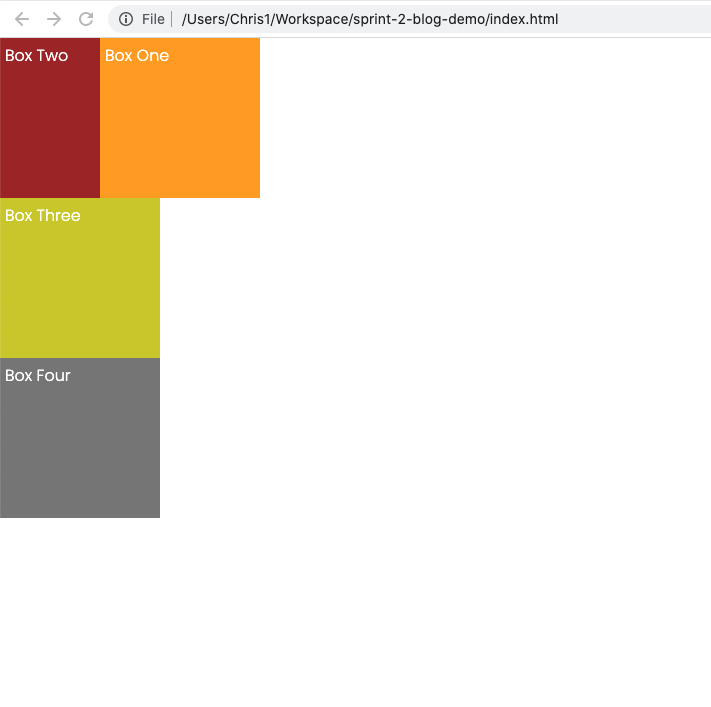In this case, the pan can be considered the parent element of the orange brownie, as the left property is relative to the edge of the pan- in terms of HTML code, the parent item would be the body element, which is like a container for all the elements within it.
Elements with absolute position will be positioned relative to the closest ancestor with position defined. This applies for elements that are nested inside other elements, ie. they are children of parent elements. Think of this like Russian dolls, where each sits inside the last one.
In the HTML below, each box is now nested to the previous box- The grey box is inside the yellow box, which is inside the brown box, which is inside the orange box, and the orange box is inside the 'body' element, or the 'pan' to use the brownie analogy.
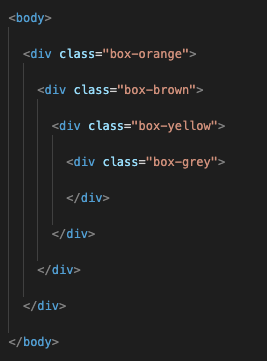Here they are arranged on screen with some additional CSS styling applied so that they sit centred, on top of one another. Note that they all have their default position of static, and are considered to be in the normal flow.
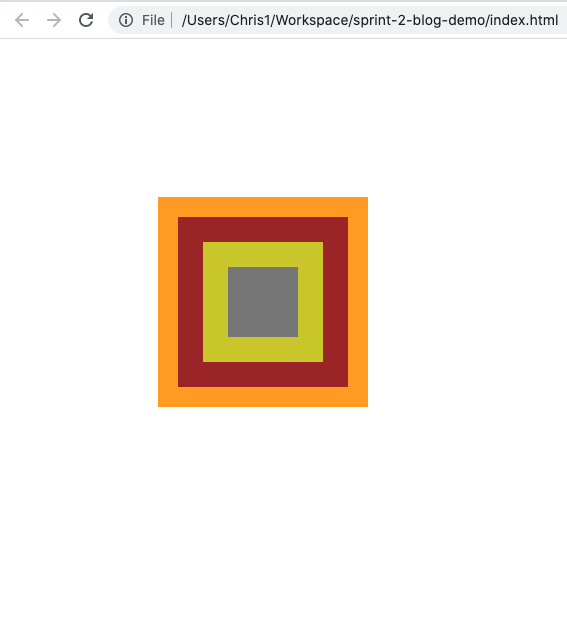If I set the grey box to have absolute position, nothing will happen. That is because it needs to have additional position properties (left, right etc) to move. See below what happens when I set the top and left values to 0px, with position as absolute.
 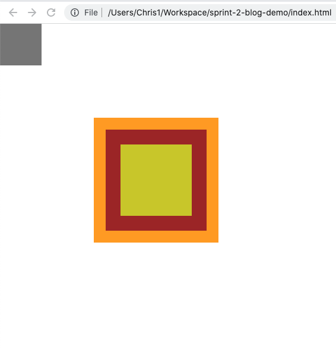
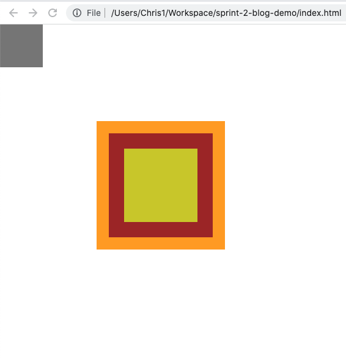
The grey box jumps to the top left corner, because it is positioning itself 0px from the top and left of it's closest parent element with position defined, in this case it's the body element, or the 'brownie pan'. Now I'll set the brown box to absolute position, and the grey box will jump to the corner of the brown box.
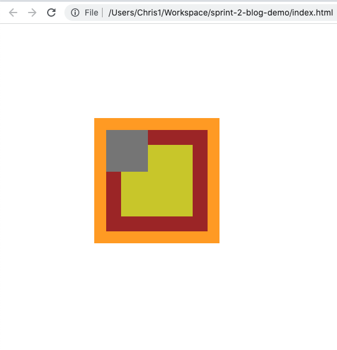Now the grey box is positioned relative to the brown box. Below you can see that adjusting other position properties will move the grey box relative to the brown box.
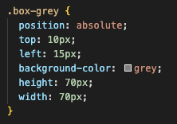 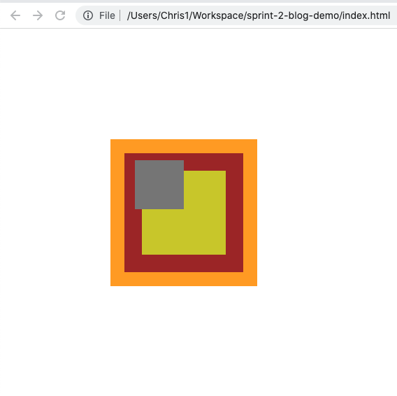Elements with their position set to fixed will stay in place on screen even when the user scrolls- think of a navigation bar at the top of the screen which remains in place as you scroll down the page.
Just like with absolute position, fixed position will remove the element from the normal flow. However unlike absolute, fixed elements are always positioned relative to the browser window/body element, as long as they have top, right,
When the user scrolls, the grey box will remain in place.
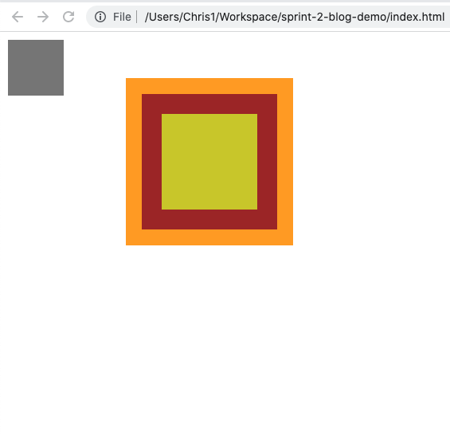The main difference to note about elements with relative position, is that unlike absolute and fixed, they will remain in the normal flow. Here are the boxes stacked in the normal flow as before, like brownie pieces neatly lined up in the pan.
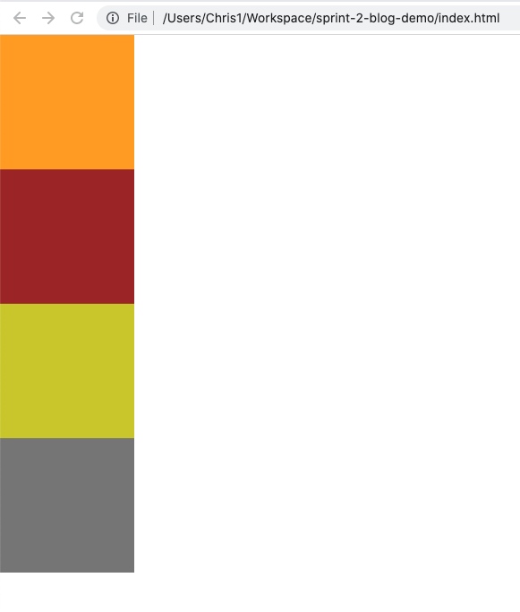Applying relative position means that the element will be positioned relative to it's original position as per the normal flow, and other elements around it will behave as if it is still in it's original position. Here, the brown box has been given relative position, a top value of 10px, and a left value of 30px.
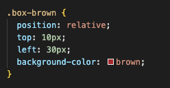Notice how it has moved from its original position in the normal flow, and the yellow and grey boxes remain where they are, as if the brown box was still in place.
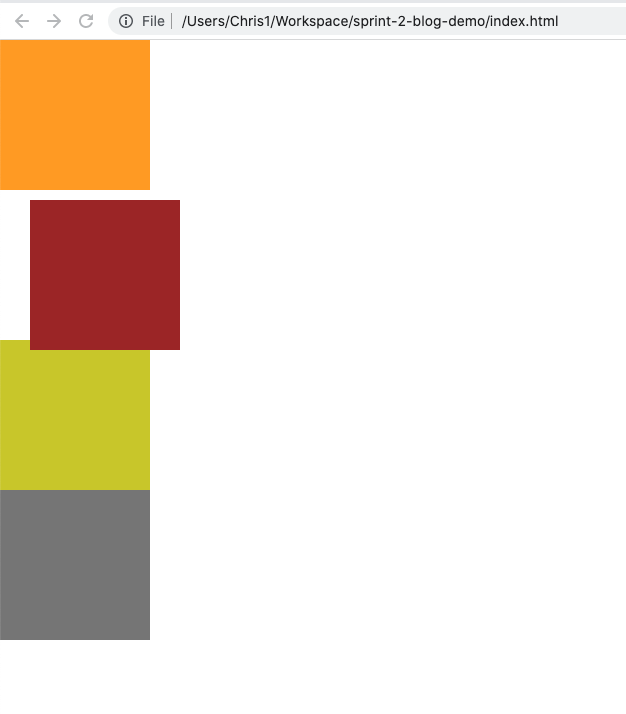In summary, the key characteristic of absolute, fixed, and relative position are;